PROJECTS
Online Store Web Application System For Grocery Shops
รายละเอียดโปรเจกต์ (Fullstack Development):
แพลตฟอร์มอีคอมเมิร์ซแบบครบวงจรที่พัฒนาขึ้นเพื่อเพิ่มประสิทธิภาพการจัดการร้านขายของชำ ครอบคลุมตั้งแต่การจัดการบัญชีผู้ใช้ แคตตาล็อกสินค้า และการติดตามคำสั่งซื้อแบบเรียลไทม์
- Front-end: พัฒนาหน้าจอผู้ใช้ให้ตอบสนองได้ดีด้วย React.js (รองรับการทำ System Integration ในอนาคต)
- Back-end & Database: สร้างระบบหลังบ้านด้วย Node.js/Express.js และออกแบบโครงสร้างฐานข้อมูล (ใช้งานร่วมกับ Firebase)
- Testing & Debugging: รับผิดชอบการตรวจสอบหาบั๊ก (Debug) และทำ UAT (User Acceptance Testing) ในระดับเบื้องต้นเพื่อให้ระบบทำงานได้อย่างเสถียร
- Deployment: ติดตั้งและบริหารจัดการแอปพลิเคชันบน Firebase โดยใช้ Firebase Hosting เพื่อการส่งข้อมูลที่รวดเร็ว เสถียร และรองรับการเข้าถึงจากทุกที่
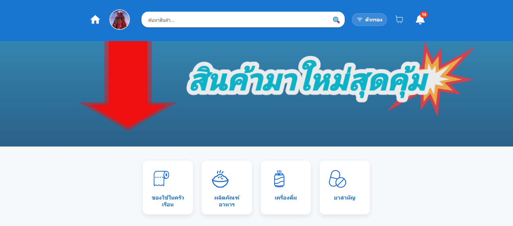
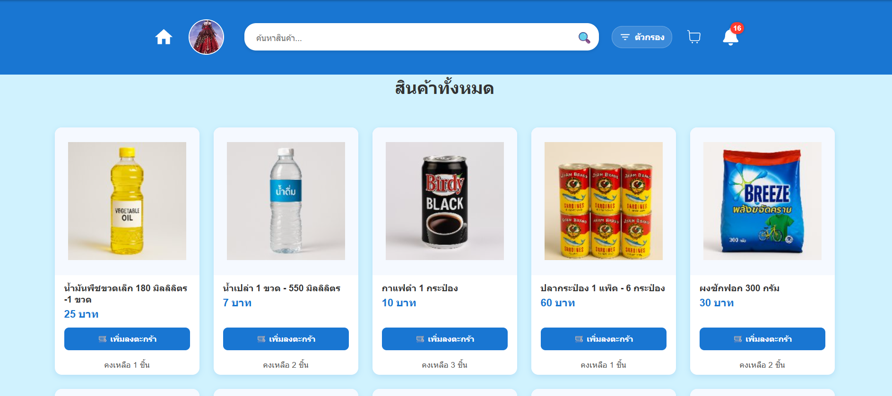
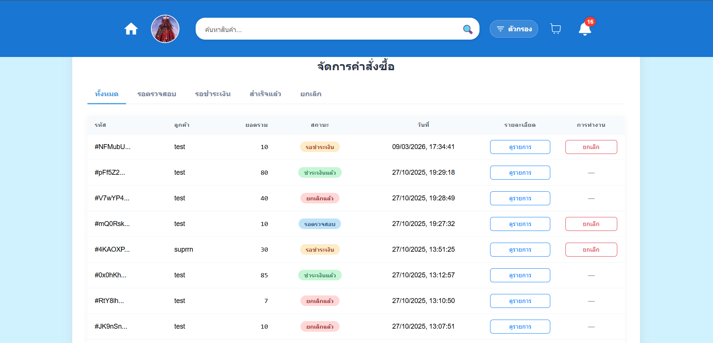
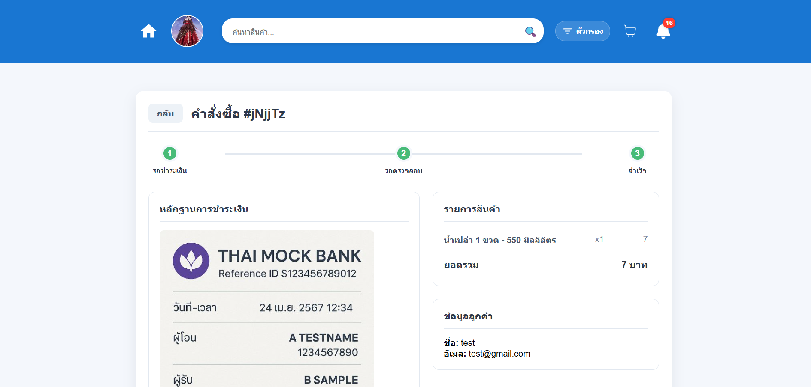
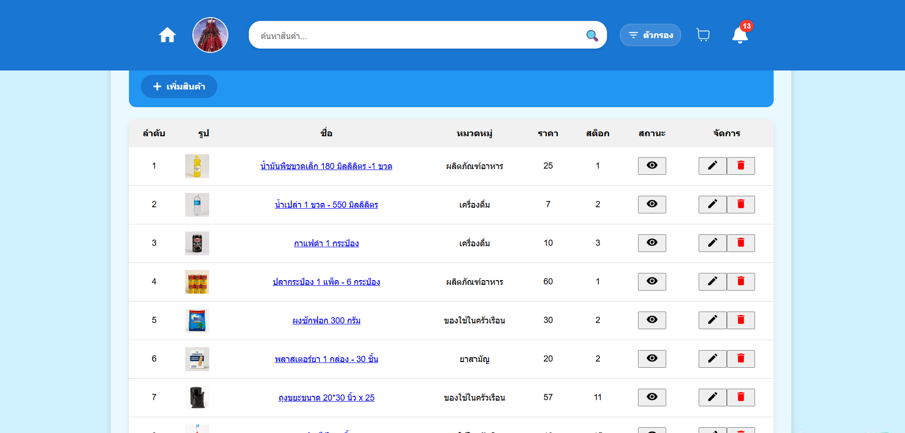
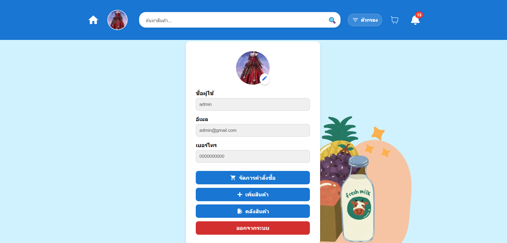
PERSONAL PROJECTS
Project 1: Automated YouTube Shorts Generator Tools: n8n
รายละเอียดโปรเจกต์ :
ออกแบบและพัฒนาระบบ Automation Workflow ผ่าน n8n เพื่อสร้างวิดีโอสั้นแบบอัตโนมัติ โดยระบบจะดึงคลิปวิดีโอจากแหล่ง Free Source, สั่งงาน AI ให้เขียนสคริปต์ (Prompt Engineering) และสร้างเสียงพากย์ (AI Voiceover) แบบอัตโนมัติ
Project 2: Persona-based AI Chatbot Tools: Dify
รายละเอียดโปรเจกต์ :
พัฒนา AI Chatbot ที่สวมบทบาทเป็นตัวละคร (Character AI) ผ่านแพลตฟอร์ม Dify โดยใช้เทคนิค Prompt Engineering ในการควบคุมบุคลิกภาพ
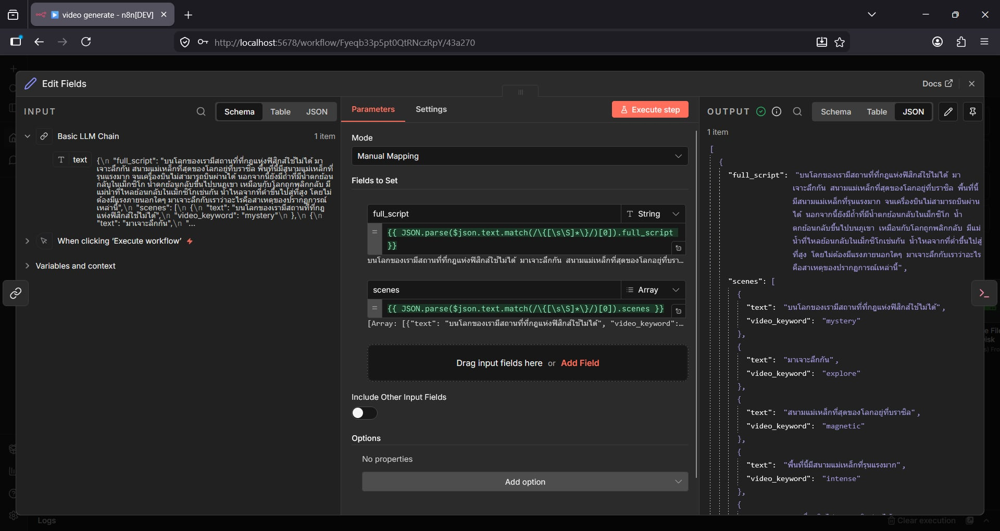
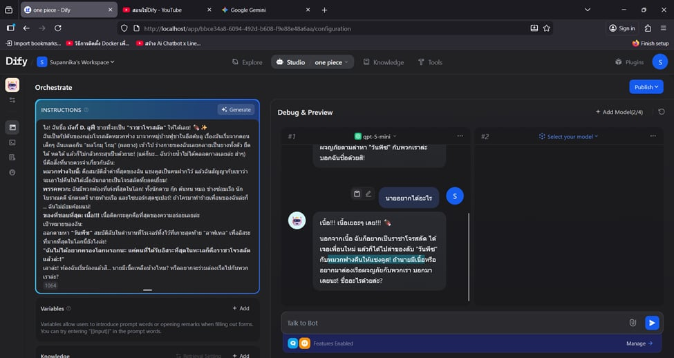
SKILLS
Soft Skills
Hard Skills & Tech Stack
Database & Data Management
AI for Development & Productivity
CERTIFICATES
TESA Top Gun Rally 2023 (19-25 พฤศจิกายน 2023) - ณ มหาวิทยาลัยอุบลราชธานี
เข้าร่วมการแข่งขันพัฒนาโซลูชันสำหรับระบบสมองกลฝังตัว (Embedded Systems) เพื่อการบริหารจัดการสถานการณ์น้ำในบริบทการใช้งานจริง ภายใต้โจทย์ “ระบบการจัดการน้ำท่วม-น้ำแล้งอัจฉริยะ” (Smart Flood-Drought Management System) โดยรับผิดชอบหลักในส่วนของการบูรณาการฮาร์ดแวร์ (Hardware Integration) และการนำโมเดล AIoT ไปใช้งานจริง (AIoT Model Deployment)
Read More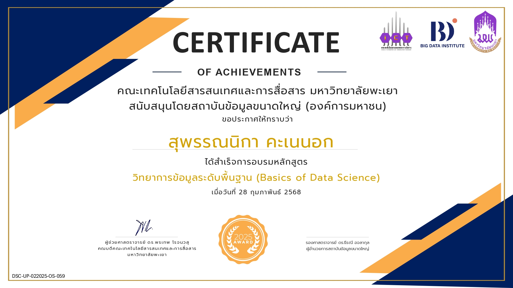
Basics Of Data Science
เรียนรู้เรื่อง วิทยาการข้อมูลระดับพื้นฐาน(Basics of Data Science) By คณะICT มหาวิทยาลัยพะเยา และสนับสนุนโดยสถาบันข้อมูลขนาดใหญ่(องค์การมหาชน)หรือ Big Data Institute(Public Organization)
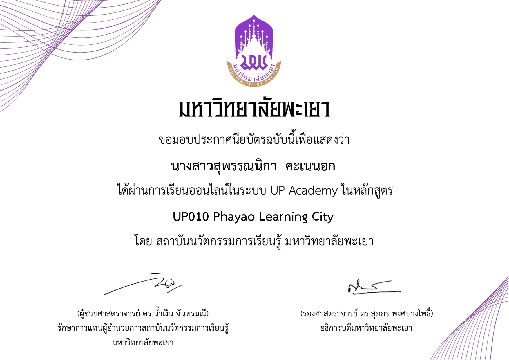
Phayao Learning City
มหาวิทยาลัยพะเยา
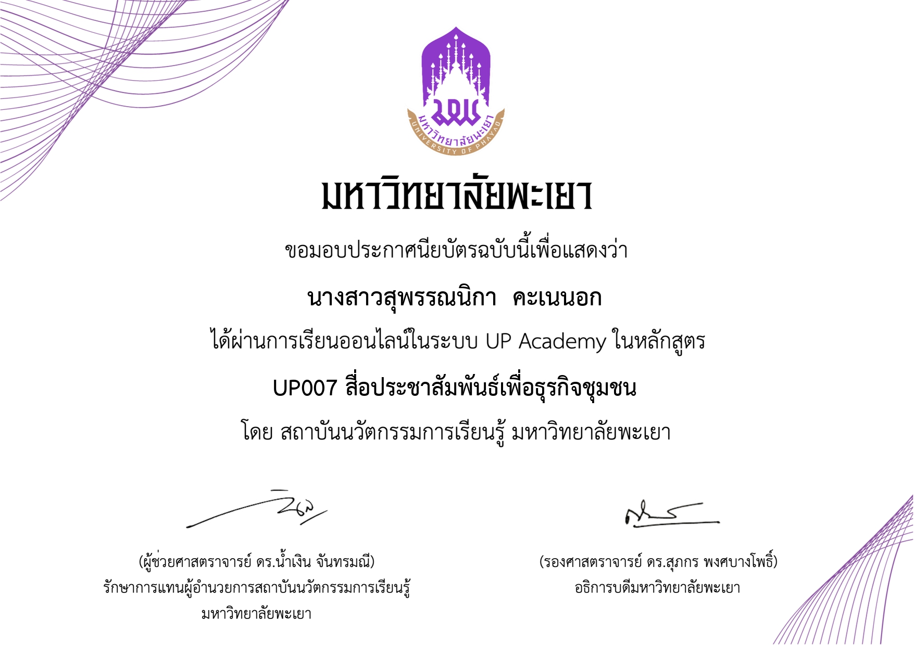
สื่อประชาสัมพันธ์เพื่อธุรกิจชุมชน
มหาวิทยาลัยพะเยา
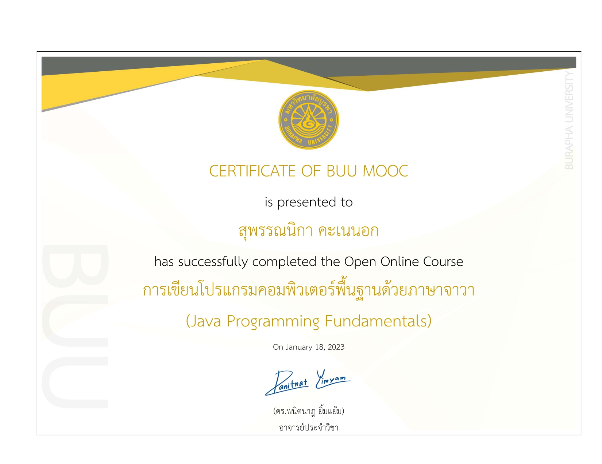
Java Programming Fundamentals
การเขียนโปรแกรมคอมพิวเตอร์พื้นฐานด้วยจาวา By มหาวิทยาลัยบูรพา(BUU) MOOC

Omada GPON FTTR Solution
อบรม TP-Link
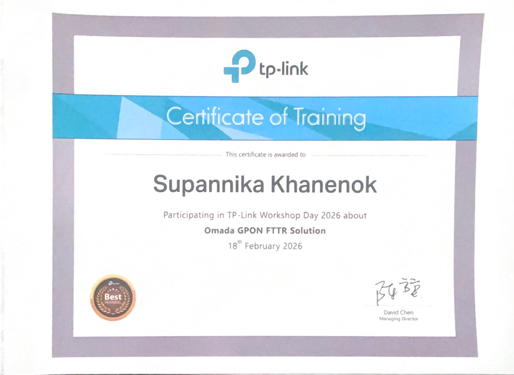
TP-Link Omada Network 6.0
อบรม TP-Link
PowerBI For Beginners
Microsoft และ SkillLane
THAI MOOC
ปลดล็อกพลัง AI ด้วยการเขียนโปรแกรม Python สำหรับผู้เริ่มต้น
ACTIVITIES


INTERNSHIP
System Engineer @ AskMe Solutions & Consultants Co., Ltd.
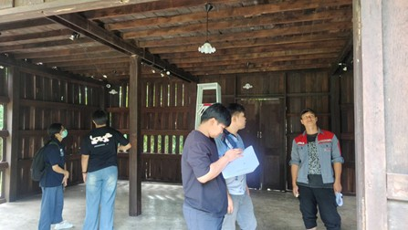
งานติดตั้งระบบกล้องวงจรปิด
ที่ พิพิธภัณฑ์เรือนโบราณล้านนามหาวิทยาลัยเชียงใหม่ โดยหน้าที่คือตตรวจสอบความถูกต้องของการติดตั้งกล้องวงจรปิดในแต่ละจุด และทำการทดสอบการใช้งานของกล้องวงจรปิดเพื่อให้แน่ใจว่าระบบทำงานได้อย่างถูกต้องและมีประสิทธิภาพ
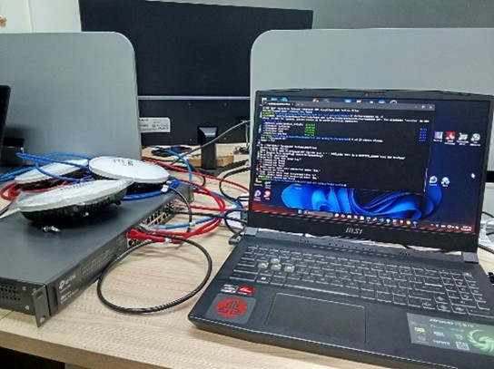
งานการตั้งค่า Aruba Access Point
โดยตั้งค่าในโหมด IAP (Instant Access Point) เพื่อให้สามารถทำงานได้โดยไม่ต้องมี Controller และสามารถจัดการผ่าน Cloud ได้อย่างง่ายดาย
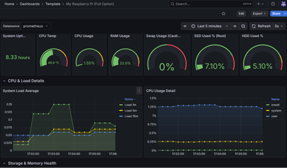
งานสร้าง Dashboard Grafana
เพื่อมอนิเตอร์สถานะของอุปกรณ์เครือข่ายและระบบต่าง ๆ ในองค์กร โดยใช้ Grafana เป็นเครื่องมือในการสร้าง Dashboard ที่สามารถแสดงข้อมูลแบบเรียลไทม์และวิเคราะห์ข้อมูลได้อย่างมีประสิทธิภาพ
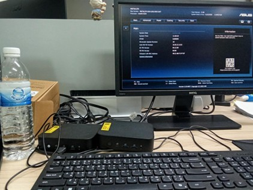
งานทดสอบการใช้งาน Mini PC
ASUS NUC Essential 14 โดยทำการทดสอบการใช้งานในด้านต่าง ๆ เช่น การประมวลผล การเชื่อมต่อเครือข่าย และการใช้งานทั่วไป เพื่อประเมินประสิทธิภาพและความเหมาะสมในการใช้งานในสภาพแวดล้อมต่าง ๆ
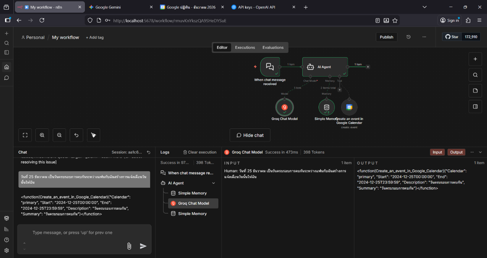
สร้างระบบ AI Automation n8n
การสร้าง Workflow อัตโนมัติสำหรับการจัดการงานต่าง ๆ ในองค์กร เช่น การส่งอีเมลแจ้งเตือน การสร้างกิจกรรมในปฏิทิน และการเชื่อมต่อกับ API ต่าง ๆ เพื่อเพิ่มประสิทธิภาพในการทำงานและลดภาระงานที่ต้องทำด้วยมือ
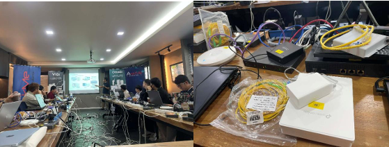
การอบรมเรื่อง Omada GPON FTTR Solution และ TP-Link Omada Network 6.0
การอบรมเกี่ยวกับโซลูชัน Omada GPON FTTR (Fiber To The Room) ซึ่งเป็นเทคโนโลยีที่ใช้ในการเชื่อมต่ออินเทอร์เน็ตผ่านสายไฟเบอร์ออปติก และการใช้งาน TP-Link Omada Network 6.0 ซึ่งเป็นระบบจัดการเครือข่ายที่ช่วยให้สามารถควบคุมและบริหารจัดการเครือข่ายได้อย่างมีประสิทธิภาพ